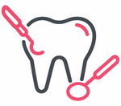
Диагностика
Осмотр и консультация
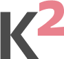
СтоматологияСанкт-ПетербургСемейная стоматология в Купчине
Поим чаем и болтаем о всякой всячине.
Записаться на приём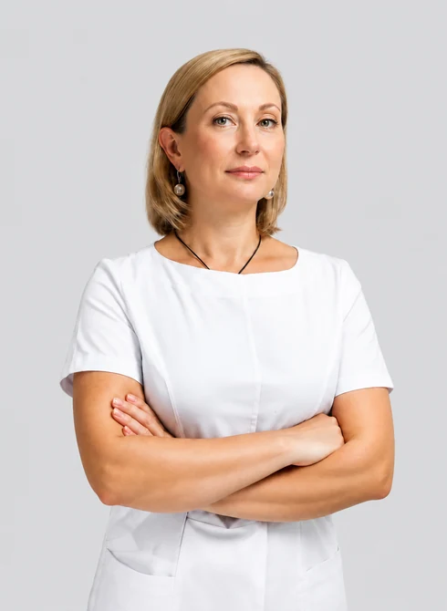
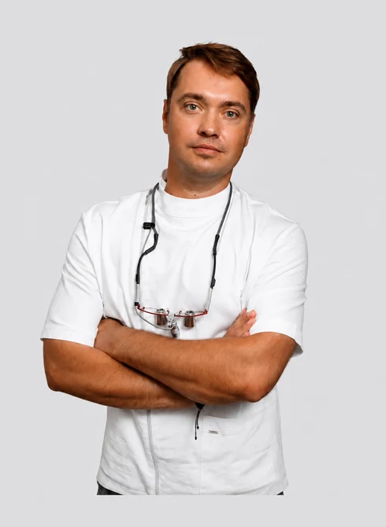
Врачи и основатели К2
Выберите направление или начните с консультации.

Осмотр и консультация
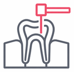
Лечение кариеса и восстановление зубов
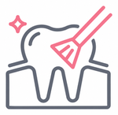
Профессиональная чистка зубов
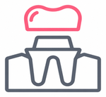
Коронки и зубные протезы
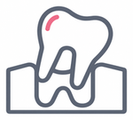
Удаление зубов и другие операции
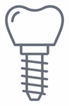
Восстановление утраченных зубов
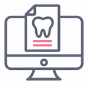
Цифровое планирование лечения
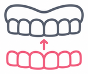
Исправление прикуса прозрачными капами
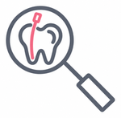
Лечение корневых каналов
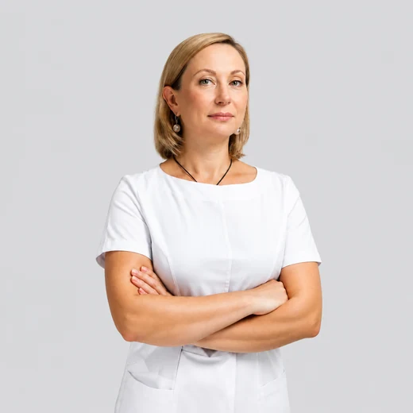
Терапевт, хирург-имплантолог
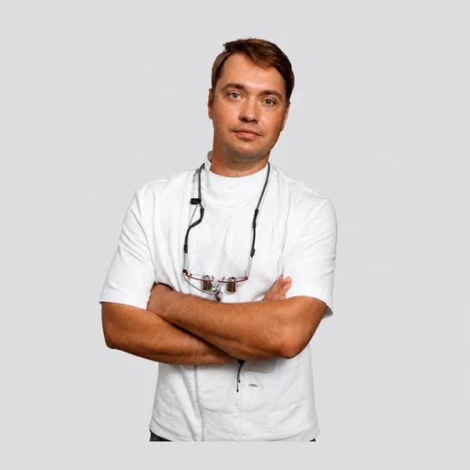
Стоматолог-ортопед
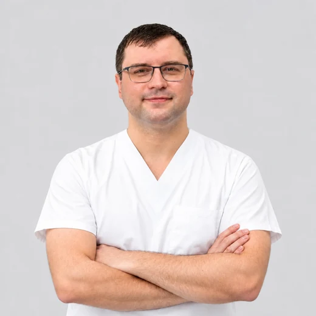
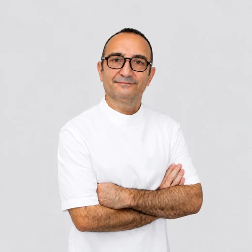
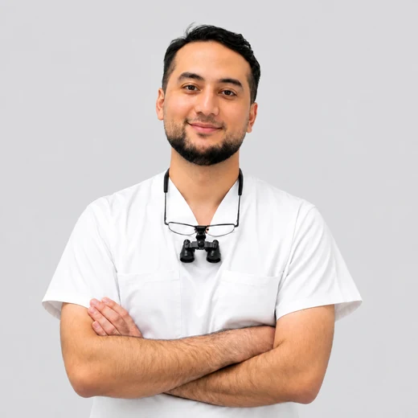
Клинику основали супруги и стоматологи Дмитрий Клишин и Татьяна Кулагина. Их фамилии дали клинике имя.
Многие пациенты приходят к нам по совету друзей и близких. Мы рады и тем, кто впервые о нас услышал.
Помогаем ухаживать за зубами, лечим и восстанавливаем их. Для планирования лечения используем 3D-моделирование, а при имплантации применяем хирургические шаблоны.
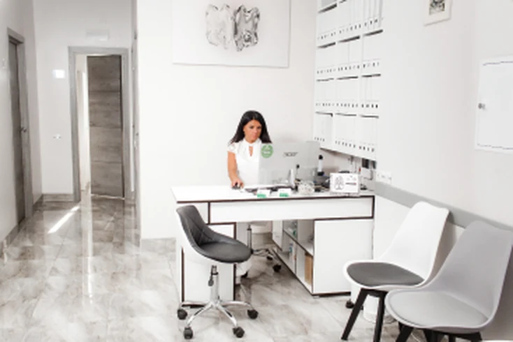
Пн–Пт 10:00–20:00 Сб 10:00–15:00
Вс выходной
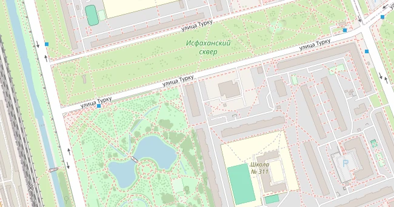